screenshot_0 · full
[2560, 1304] → [2560, 1304] · 保留像素 100.0% · 场景 0
原图与选区

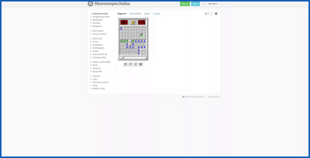
算法输出预览

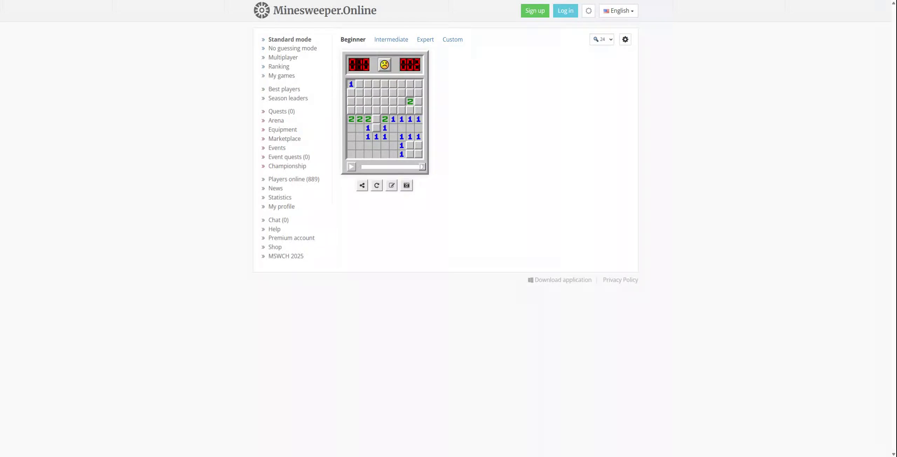
坐标：[0, 0, 2560, 1304] · 原因：first_screenshot
算法版本：experimental_theme_aware_per_step_v2。仅用于预览，生成流程未修改。
返回任务总览 · 查看全部步骤拼图 · 查看算法判断 JSON
左侧为原图预览和选区（绿色：裁剪；蓝色：保留整图），右侧为此算法的输出预览；实验版尚未用于生成。点击图片查看原尺寸；预览自动缩放。像素减少比例不等于 token 减少比例。
[2560, 1304] → [2560, 1304] · 保留像素 100.0% · 场景 0
原图与选区

算法输出预览

坐标：[0, 0, 2560, 1304] · 原因：first_screenshot
[2560, 1304] → [1095, 571] · 保留像素 18.7% · 场景 0
原图与选区
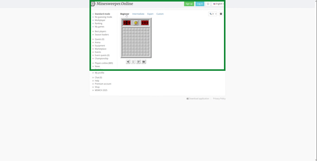
算法输出预览
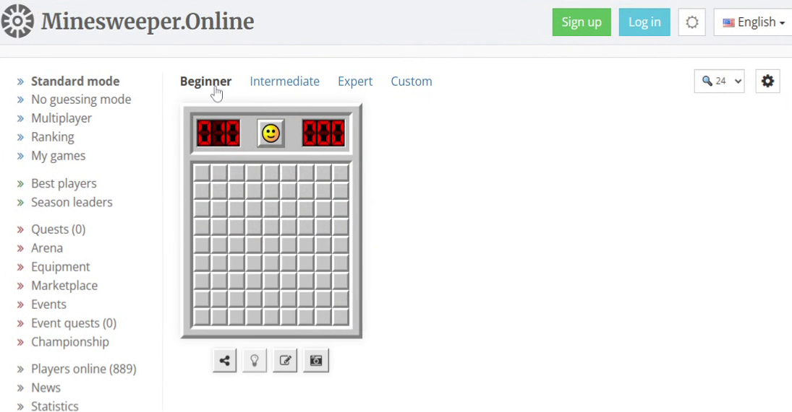
坐标：[723, 0, 1818, 571] · 原因：localized_change
[2560, 1304] → [632, 636] · 保留像素 12.0% · 场景 0
原图与选区
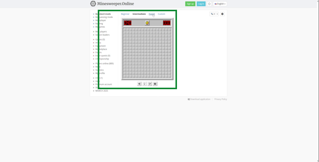
算法输出预览
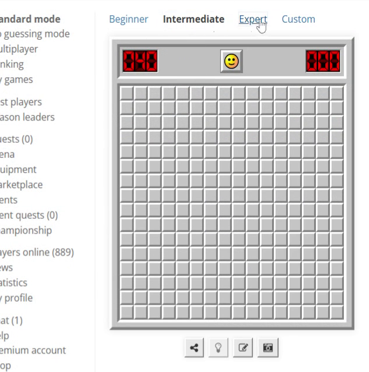
坐标：[785, 80, 1417, 716] · 原因：localized_change
[2560, 1304] → [1696, 1227] · 保留像素 62.3% · 场景 0
原图与选区
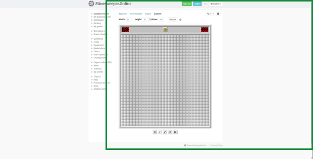
算法输出预览
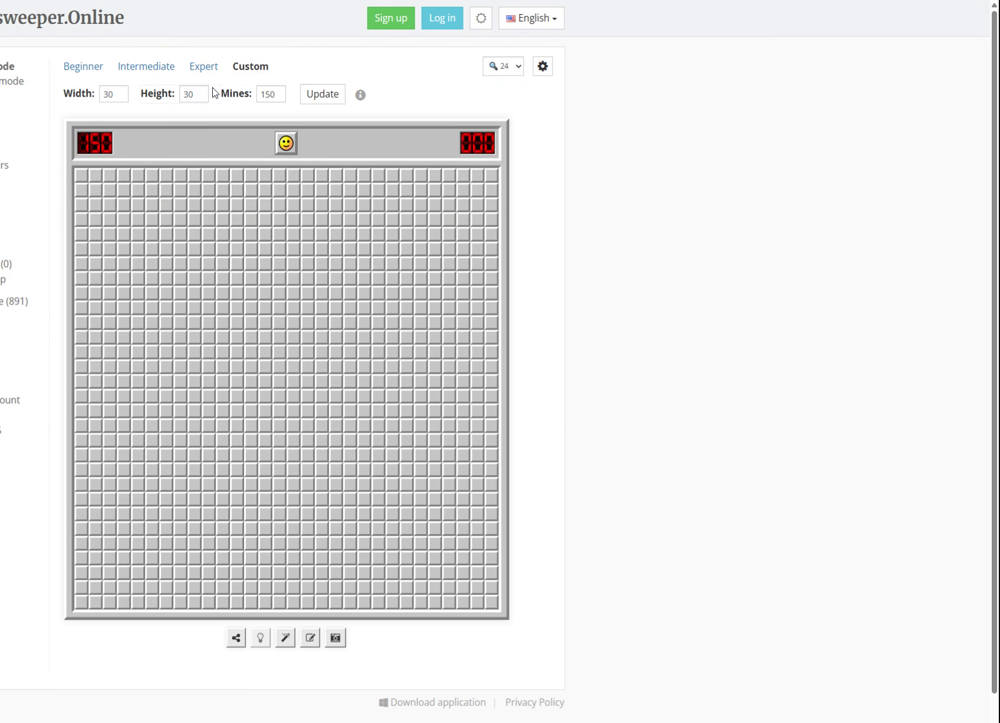
坐标：[864, 0, 2560, 1227] · 原因：localized_change
[2560, 1304] → [272, 84] · 保留像素 0.7% · 场景 0
原图与选区
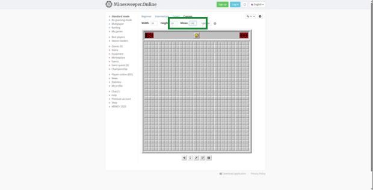
算法输出预览
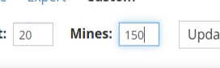
坐标：[1152, 117, 1424, 201] · 原因：localized_change
[2560, 1304] → [117, 79] · 保留像素 0.3% · 场景 0
原图与选区
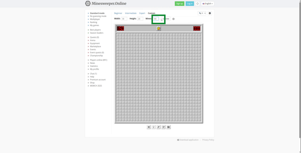
坐标：[1290, 125, 1407, 204] · 原因：localized_change
[2560, 1304] → [1612, 1227] · 保留像素 59.3% · 场景 0
原图与选区
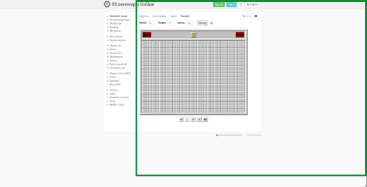
算法输出预览
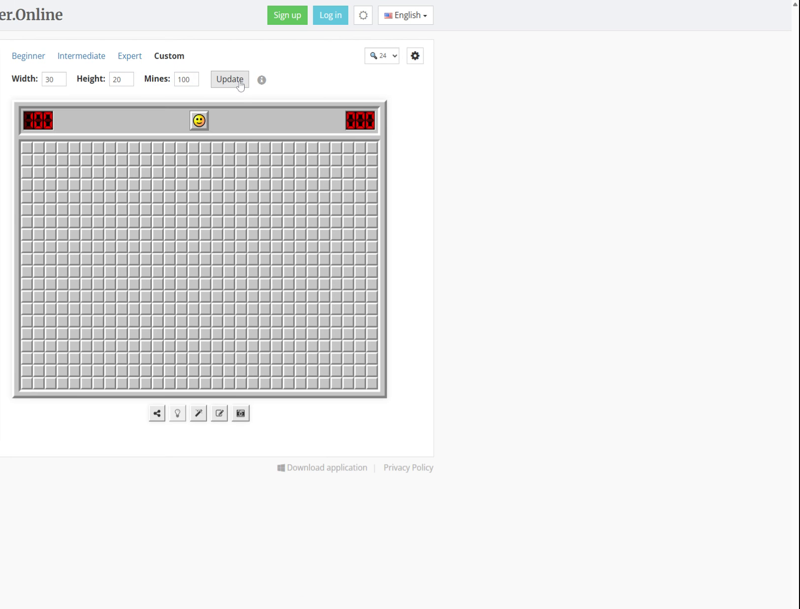
坐标：[948, 0, 2560, 1227] · 原因：localized_change
[2560, 1304] → [389, 331] · 保留像素 3.9% · 场景 0
原图与选区
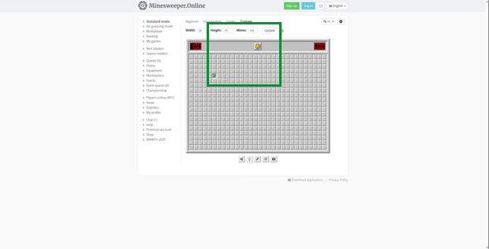
算法输出预览
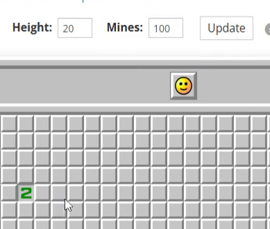
坐标：[1085, 119, 1474, 450] · 原因：localized_change
[2560, 1304] → [1037, 804] · 保留像素 25.0% · 场景 0
原图与选区
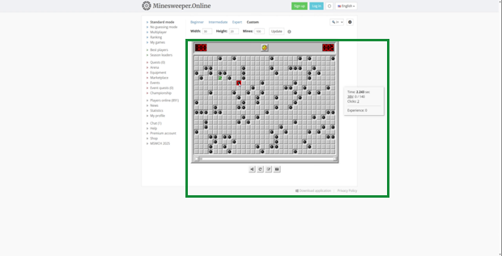
算法输出预览
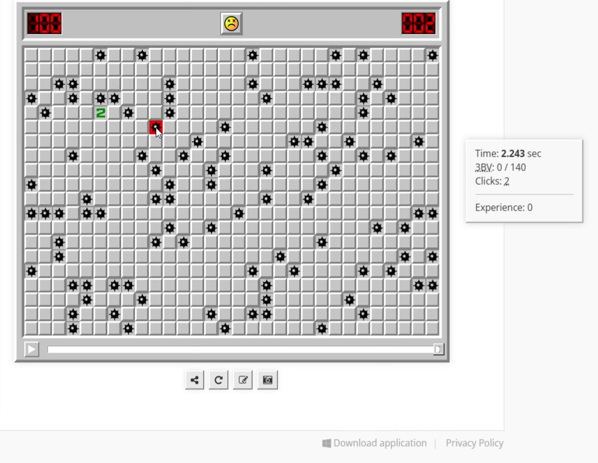
坐标：[948, 202, 1985, 1006] · 原因：localized_change